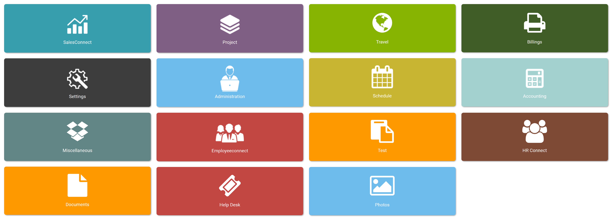
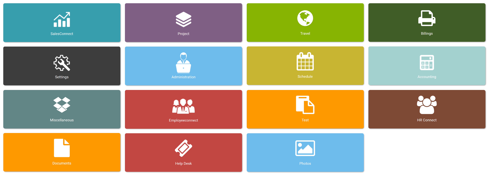

スマートERPコネクト

 

スマートERPコネクトは、組織が統合アプリケーションのシステムを使用して事業を管理できるようにする事業管理ソフトウェアになっております。
仕組み
- スマートERPコネクトは、多くの企業が事業プロセスを促進するために使用する、用途が広く、広く実装されているソリューションです。
- さまざまなカスタマイズおよび構成好みを利用できるため、特定の要件やすでに使用している既存のソフトウェアに合わせて解決を調整できます。
- スマートERPコネクトは、やりがいのある面倒なワークフローを自動化することで、日常のワークフローを少し簡単にすることを目指しています。
- 最も基本的な平準は、スマートERPコネクトは、これらのさまざまな機能を1つの完全なシステムに統合して、組織全体のプロセスと情報を合理化します。
- スマートERPコネクトの中心的な機能は、さまざまなビジネスユニットで使用される複数の機能を支援する共有データベースです。
主なメリット
- 中小企業、新興企業にとって費用効果が高い
- 必要に応じたカスタマイズ
- すべてのモジュールを支援する共通データベース
- モジュール間で一貫したカスタマイズ可能なルックアンドフィール
- より少ない人間の介入による生産性の向上
- マスターデータ管理
ケーススタディ
- 小規模企業が社内 ERP システムを管理できるように支援
- 従来の XLS アプローチでは無くてシステムで請求 / 販売額管理して便利
- クラウドベースとして保留は便利
- バックアップ、 どこからでもアクセスでき、インターフェイスが使いやすい
適用分野
- 営業管理
- プロジェクト管理
- プロダクトとサービスの管理
- 従業員管理
- 人事管理